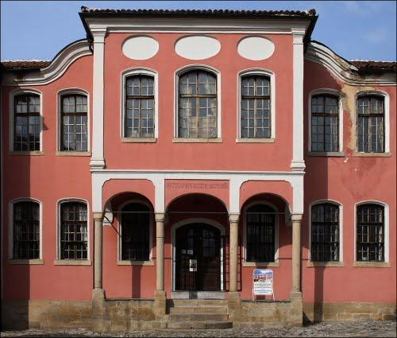
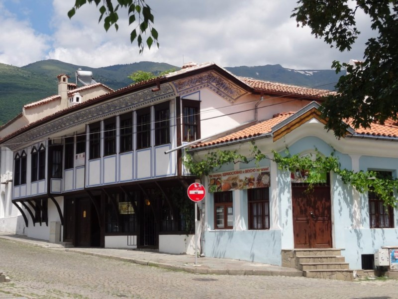
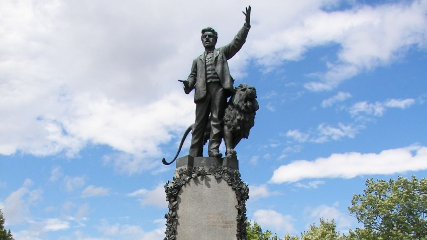
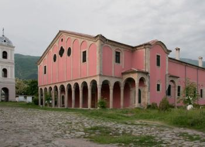

Забележителности
Национален музей „Васил Левски”

Родната къща на Васил Левски се намира в западната част на Карлово. Тя е от ранния период на Възраждането. Строена е през 18 вek от Кунчо Иванов, дядото на Левски, а след това е обитaвана от двамата му сина Иван и Въльо Кунчеви. Къщата е малка едноетажна сграда. Каменни стълби отвеждат в зимника, стая, иззидана почти в земята. Вляво от стълбището има килер без прозорец със сандък за брашно, нощви и други съдове. Вдясно е скривалището. Пред него, в стената, е вграден долап, на който вътрешната стена е дървена вратичка, измазана с вар. В долапа се нареждали нагънати черги, за да се закрива вратичката на самото скривалище. Горе къщата има две стаи.В едната стопаните са нощували през лятото, а другата е била гостна. Непосредствено до нея е долепена работилницата – ниска постройка, състояща се от стая, в която са плели гаитани и полуоткрита бояджийница.
Исторически музей – Карлово
Исторически музей – Карлово, част от 100-те НТО. Намира се в Стария град, в една от най-представителните сгради от епохата на Възраждането – някогашното петокласно мъжко училище, построено през 1871 г. Музеят представя историята на града от основаването му през ХV век до наши дни. Ккомплексът включва и открити експозиции – възстановка на розоварна от началото на XIX век, терзийска работилница, гайтанджийска одая, тепавица и др.
Бухаловият хан
Бухаловият хан е една от емблематичните възрожденски къщи в туристическия комплекс „Старинно Карлово”. В нея навремето се събирал революционният комитет, основан от Васил Левски. Днес тя е реставрирана и превърната в Център за занаяти и културни традиции. Тук посетителите могат да се докоснат до майсторството на местните дърворезбари, ножари, гравьори, медникари, бъчвари, иконописци, да опознаят великолепието на калоферската дантела, на тъкачеството, плетачеството, изработката на кукерски маски, да се насладят на ароматно кафе, приготвено на пясък, да опитат сладко и локум от рози и десерти, приготвени по стари карловски рецепти.
Паметник на Васил Левски.
Паметник на Васил Левски. Основният му камък е положен на 15 май 1903 г. в присъствието на княз Фердинанд. На пиедестала на паметника са изписани имената на загиналите през страшните юлски и августовски дни на 1877 г. карловци, възприели веруюто на Левски : „Нам свобода и човешки правдини трябват!”.
Църква „Свети Николай”
Църква „Свети Николай” (1847 г.) – паметник на възрожденската архитектура. Сред иконописците й са Станислав Доспевски и Иван Зографски. Тук през 1858 г. за първи път е отпразнуван денят на българската писменост. В двора на църквата се намира гробът на Гина Кунчева – майката на Васил Левски.